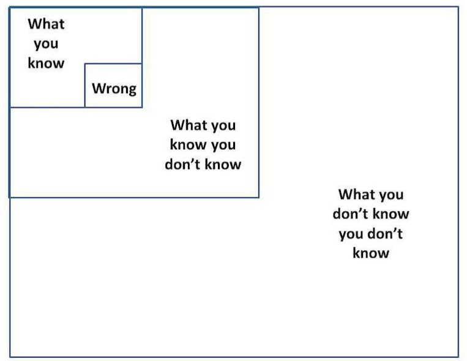
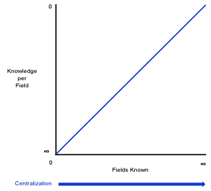

The Skepticism-Certainty Continuum
Questioning What We Know
1. The Burden of Proof
The burden of proof belongs to everybody who cares to prove what they believe to be true.
When deciding whether something is true or false, the Null Hypothesis is the default conclusion, unless there is evidence to prove otherwise (the Alternative Hypothesis).
It is sufficient to say that a proposition is false if there is no evidence for it (i.e. it is sufficient for this side to fulfill their burden of proof). By the same token, if the absence of evidence for something proves that the opposite proposition is true, then that counts as sufficient proof.
2. The Definitions of Skepticism and Certainty
There are at least two different definitions of certainty:
- Certainty in the sense of probability (impossible to certain, false to true).
- Certainty in the sense of what is unknown (what we are skeptical of) and what is certain (what we are sure of beyond a reasonable doubt).
Skepticism may be defined as:
- Questioning and/or doubt. The opposite of certainty.
- Habitual questioning and/or doubt, perhaps towards everything. This is usually what skepticism means in philosophy, and it could be distinguished by being called “philosophical skepticism”.
3. Evidence And Skepticism Constraints
Implicit in every scientific discovery and knowledge claim we ever make should be the words: “According to all available evidence and knowledge, this is the correct conclusion”. If you think this way, then you will welcome new findings and discoveries as a way to expand your knowledge, not as a threat to your current thoughts and dogmas. Yes, we can still be proven wrong, but we can also acknowledge this when it happens and change our beliefs to stop being wrong.
Note: Randian Objectivists and other philosophers have claimed that “Arbitrary” ideas cannot be proven wrong, but this isn’t true. Radical Skepticism and Solipsism for example are both arbitrary ideas that can be proven wrong by performative contradiction. Likewise, if some crazy conspiracy theorist asserts that other people cannot truly know or prove if the 45th president truly did place the US under martial law, such a ridiculous claim can be proven wrong by empirical experience. The same can be done for an abstract concept like “God” which is poorly defined, is not observable in reality, is statistically and historically the strongest delusion to ever exist in humans, and more. Ultimately, the key to debunking the existence of “God” when it is defined under one of its supernatural definitions is to either keep letting the contradictions pile up until the system is rejected, and/or to question the epistemic foundations for the belief in “God” and the associated religion (if there is one).
“Arbitrary”: Things for which there is no evidence in believing perceptually or conceptually. Arbitrary claims are not based on either direct observation nor any kind of theoretical argument. An arbitrary idea is a sheer assertion with no attempt to validate it or connect it to reality. Holding arbitrary ideas is just as bad as holding false ideas, because the mind has corrupted its means of objectively identifying ideas in reality and abandoned its mechanism to correct errors. The severity of how bad it is to hold arbitrary ideas depends on the extent to which an individual allows those arbitrary notions to pervade their mind.
There is a difference between what can be inferred and what is shown to happen.
- Technically, inferred events don’t count as evidence.
- Evidence can only consist of stuff that has concretely already happened.
- To make up for the lack of evidentials, we could invent a new terminology to distinguish between evidence and different things.
All three of these beliefs are some of the biggest mistakes anybody could ever make when forming their implicit or explicit theory of epistemology.
- Believing in arbitrary things that can never be proven,
- Considering that there is always some possibility that arbitrary beliefs might be true without any evidence, and/or
- Believing in skepticism or solipsism.
These arbitrary beliefs highlight the importance that we add a critical requirement to our epistemological framework. In order for any idea to be deemed “possible”, it must have at least some evidence to back it up. Every possible concept must have at least some evidence to support it as a possibility.
Arbitrary statements should be treated as if nothing had been said. It’s not possible to make true, meaningful statements if those assertions were made without supporting evidence.
|  |  |
There are various circulating conspiracy theories and false flag theories and so on. Those should always be dismissed if there’s no evidence to support them, not because there aren’t conspiracies, but because conspiracy theories are usually bogus. Conspiracy Theories are almost always an excuse not to think because the conspiracy allows you to have a really bad explanation, and then just cover up the flaws in your explanation by saying: “Well they’re hiding it from us”.
Awareness-Understanding Matrix
| Aware | Not Aware | |
| Understand | Known Knowns: Things we are aware of and understand | Unknown Knowns: Things we are not aware of but do understand or know implicitly |
| Don’t Understand | Known Unknowns: Things we are aware of but don’t understand | Unknown Unknowns: Things we are neither aware of nor understand |
4. The Impossible-to-Certain Continuum
The Impossible-Certain Continuum: Impossible, Possible, Probable, Certain.
Question: True, False, Maybe are equivalent to Certain, Impossible, and Unknown/Possible, right?
All knowledge that we acquire within our lifetimes is based on observations by our senses, the concepts we form, and the extent to which we can infer things with logic.
Each of the levels of certainty: impossible, unknown, possible, likely, and certain respectively correspond to deductive, not enough information, some evidence, ampliative evidence, and deductive evidence. Greater evidence correlates with greater certainty, lack of evidence correlates with greater skepticism.
5. The Skepticism-Certainty Continuum
The range of skepticism to certainty regarding a proposition’s truth value is the probability of some proposition’s truth value. Skepticism exists on a spectrum, just like how certainty, confidence, and possibility also exist on spectrums. Discretely, we can define the Skepticism-Certainty Continuum with the following terms: Total Skepticism / Unknown / Imaginary, Possible, Probable, Certain.
Note: The spectrum scales for probability and skepticism/certainty seem to blend together, especially in cases where one of the scales would not exist or would seem rather redundant.
“I would rather have questions that can’t be answered than answers that can’t be questioned” – Richard Feynman
Rational Vs Rationalized
- Rationalizing means that you are using reason to validate an action that was already unreasonable to begin with.
- Skepticism is important in order to avoid rationalizing unreasonable beliefs.
6. Stating Propositions With Attributes
Template I For Stating Propositions With These Attributes:
- I am skeptical/./certain that:
- Proposition P/Q/R/S/etc is: true/false/unknown/etc
- Because: [list reason(s) here]
- Proposition P/Q/R/S/etc is: true/false/unknown/etc
Template II For Stating Propositions With These Attributes:
- The Probability (0.00 ≤ p ≤ 1.00) of:
- Proposition P/Q/R/S/etc is: true/false/unknown/etc
- Because: [list reason(s) here]
- Proposition P/Q/R/S/etc is: true/false/unknown/etc
Template III For Stating Propositions With These Attributes:
- I am skeptical/./certain that:
- The Probability (0.00 ≤ p ≤ 1.00) of:
- Proposition P/Q/R/S/etc is: true/false/unknown/etc
- Because: [list reason(s) here]
- Proposition P/Q/R/S/etc is: true/false/unknown/etc
- The Probability (0.00 ≤ p ≤ 1.00) of:
7. When Skepticism Tends To Be Beneficial
The less someone knows about the world, the more rational it is to be skeptical about everything. Skepticism becomes less useful when you have a large abundance of accurate knowledge about the world.
That being said, it is easy to see why skepticism had a fair amount of popularity as a movement in Ancient Greece. The Greeks knew very little about the world compared to what humanity knows today, and many of the Greeks beliefs were later proven to be incorrect (e.g. their polytheistic religion, creationism, they believed the world was made out of earth, fire, water, air, and aether). Additionally, elementary algebra, calculus, and many other mathematical fields were not discovered yet, and lots of other knowledge wasn’t known either).